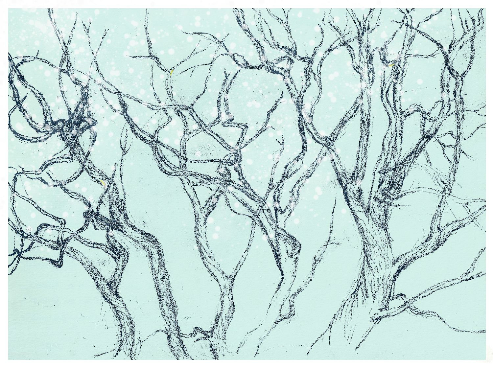

Ep.09 片思 | 会绝望的面包
Thought Sketch —— The Bread That Is Able to Despair
Shownotes |节目注记
Summary | 摘要
水蒸的馒头，火烤的面包，永不塌缩的开始塌缩，可能塌缩的尚未塌缩；关于克尔凯廓尔“能够绝望”的真正含义：绝望不是要避免，而是人成为真正自我的前提。人类个体在有限与无限之间，实践出不会塌缩的那条细线。
Water-steamed buns, fire-baked bread: the one that was never supposed to collapse begins to collapse, while the one that might collapse has not yet done so. This episode turns to Kierkegaard's true meaning of “being able to despair”: despair is not something to be avoided, but the very condition for becoming a true self. Between the finite and the infinite, we human individuals practice that thin line which resists collapse.
Timestamps | 时间戳
Credits | 制作信息
- Host-Producer | 制作: Jojo
- AI Collaboration | AI协助: GPT5
- Music | 音乐: Pixabay